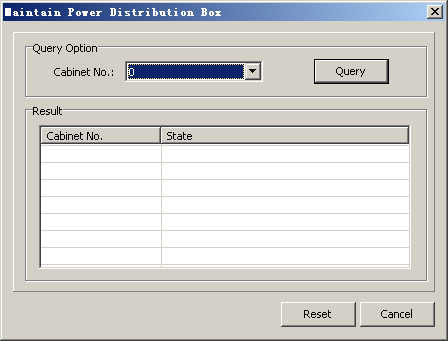

This describes how to reset the power distribution box. When the power distribution box incurs an error, you can reset it to restore its power monitoring function and overvoltage protection function without powering off the cabinet.
Prerequisites
- The LMT runs normally.
- The communication between the LMT and the BSC is normal.
- The communication between the power distribution box and the GSCU is functional.
Context
The power distribution box provides the lightning protection processing and overcurrent protection processing for the power input to the cabinet and then outputs power supplies for the cabinet. The power distribution box also monitors the voltage of the power input and the power output status. If errors are detected, the power distribution box generates alarm signals.
Procedure
- On the LMT, choose . A dialog box is displayed, as shown in Figure 1.
Figure 1 Maintain Power Distribution Box dialog box
- Set the number of the cabinet where the power distribution box to be reset is installed in Cabinet No, and then click Query.
- Select the power distribution box listed in the Result area, and then click Reset.
Copyright © Huawei Technologies Co., Ltd.